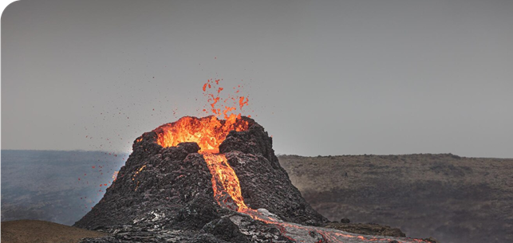

Ісландія вже кілька років поспіль демонструє стійке зростання в галузі туризму. Природні чудеса, такі як гейзери, термальні джерела, льодовики, вулкани, а також багаті історичні пам'ятки, привертають туристів з усього світу. Країна також є популярним місцем для спостереження за північним сяйвом. Туризм стає важливим сектором економіки Ісландії, сприяючи розвитку інфраструктури, готелів, ресторанного бізнесу та транспортних послуг.
